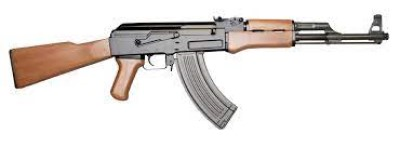

| codigo | descrição | preço | ilustração | video | #9437 | ak-47
"A AK-47, ou Avtomat Kalashnikova, 1947 (Rifle Automático Kalashnikov, modelo de 1947), leva o nome de seu fundador e o ano em que começou a operar. O russo Mikhail Kalashnikov (1919-2013) foi sargento da 108ª Divisão de Tanques do 24º Regimento do Exército Vermelho da URSS, então sobre a direção de Stalin, durante a Segunda Guerra. Após testemunhar várias baixas no Exército Vermelho, sobretudo nas campanhas contra os nazistas, Kalashnikov percebeu que uma das principais razões das sucessivas perdas em combate se dava pela falta de um rifle de assalto (de precisão e portado a tiracolo) leve, automático, que não emperrasse e que se adaptasse tanto ao clima árido quanto ao úmido. Se o Exército Vermelho da URSS dispusesse de um tal rifle, intuía Kalashnikov, os nazistas poderiam ser derrotados com maior facilidade. Nos anos finais da guerra, M. Kalashnikov empenhou-se em elaborar um projeto para o desenvolvimento dessa arma. A inspiração veio de vários modelos de rifles de assalto, mas um em especial que havia sido produzido pelos rivais alemães: o Sturmgewehr 44. No entanto, o projeto de Kalashnikov só foi levado a cabo após o fim da Segunda Guerra, em 1947, quando os primeiros modelos de AK-47 começaram a ser produzidos." Veja mais em: https://brasilescola.uol.com.br/historiag/ak-47-arma-mais-versatil-mundo.htm |
2.599 |  |
|---|